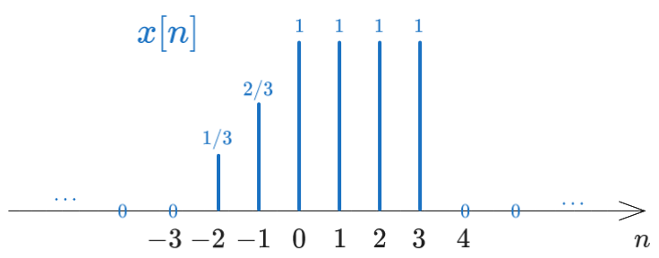
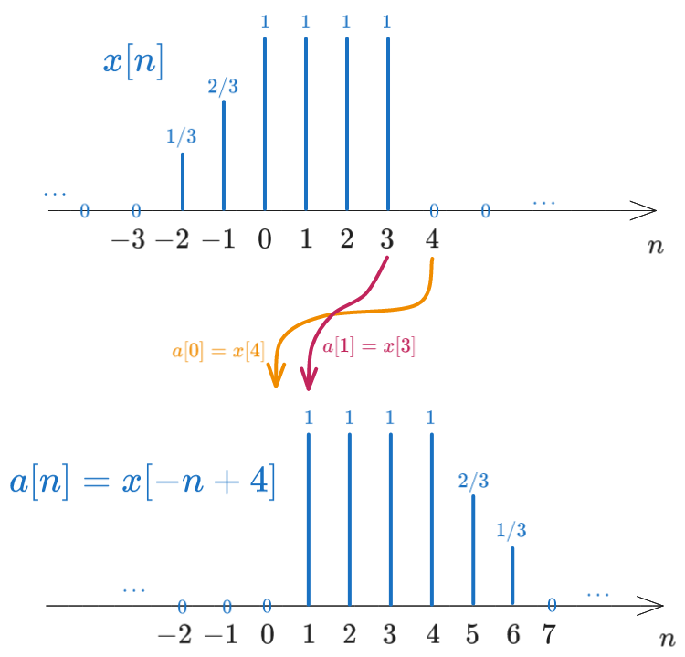
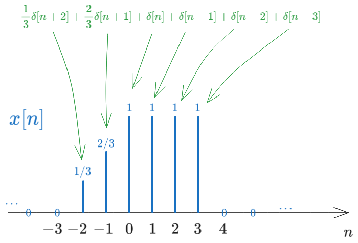
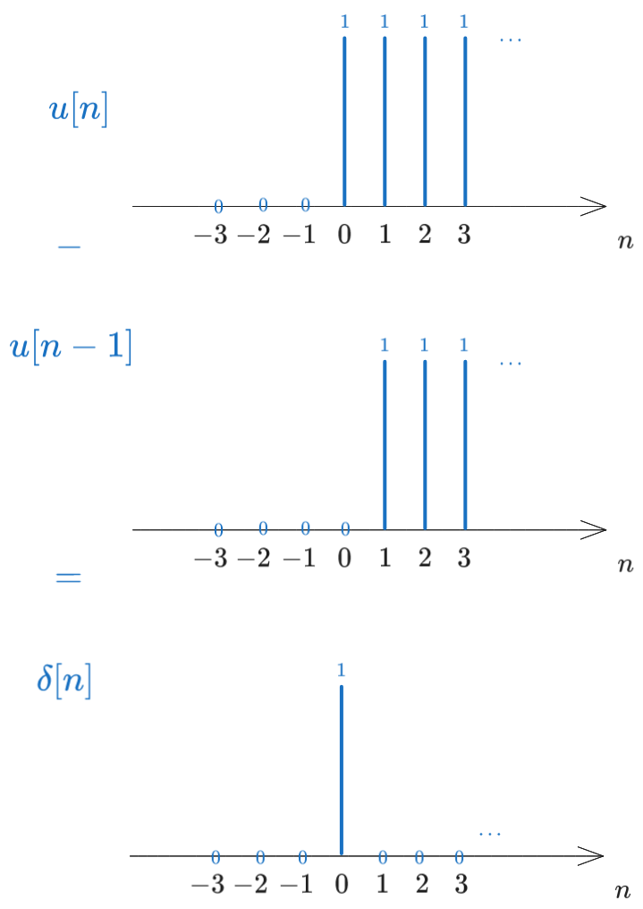
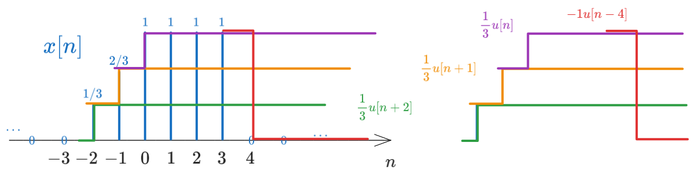
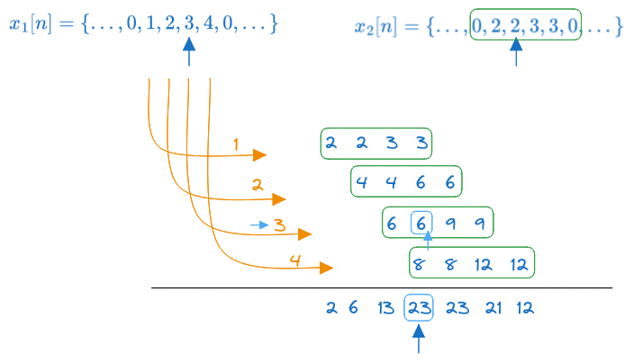
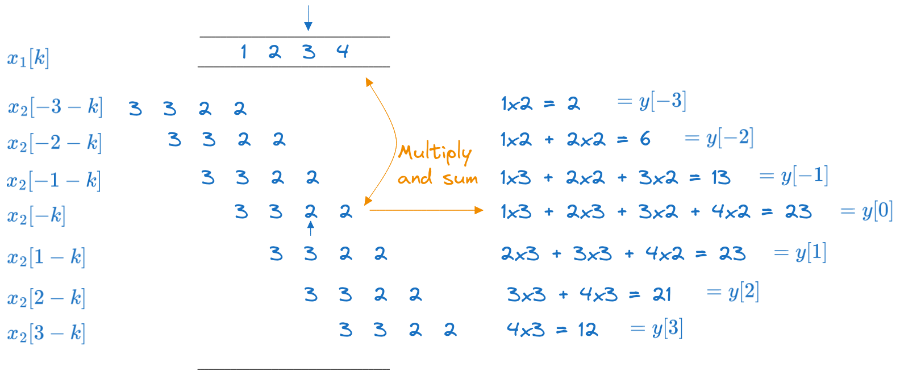
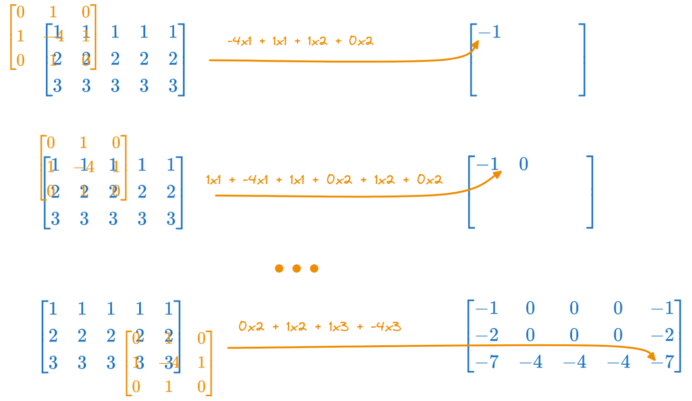

5 02: Signals and Systems
\[ \newcommand{\underuparrow}[1]{\underset{\uparrow}{#1}}\] $$
5.1 Exercise 1
Consider the following discrete signal \(x[n]\): \[x[n] = \begin{cases} 1 + \frac{n}{3}, &-3 \leq n \leq -1\\ 1, &0 \leq n \leq 3\\ 0, &\text{elsewhere} \end{cases} \]
- Find the values of \(x[n]\) and represent the signal graphically
- Represent graphically the signal \(x[-n + 4]\)
- Write the expression of \(x[n]\) based on the signal \(\delta[n]\)
- Write the expression of \(x[n]\) based on the signal \(u[n]\)
Solution
a). Find the values of \(x[n]\) and represent the signal graphically
Giving values for \(n\) in the range \(-3 \leq n \leq 3\), we obtain the following values for \(x[n]\): \[x[n] = \{..., 0, \frac{1}{3}, \frac{2}{3}, \underuparrow{1}, 1, 1, 1, 0, ...\}\] The graphical representation of the signal is:

b). Represent graphically the signal \(x[-n + 4]\)
Let’s give a name to the signal \(x[-n + 4]\), say \(a[n]\). We have: \[a[n] = x[-n + 4]\]
To understand visually what this means, let’s compute a few values of \(a[n]\): \[\begin{aligned} a[0]=x[-0+4] &= x[4] = 0 \\ a[1]=x[-1+4] &= x[3] = 1 \\ a[2]=x[-2+4] &= x[2] = 1 \\ \end{aligned}\]
We have \(x[4]\) moving to \(a[0]\), \(x[3]\) moving to \(a[1]\), \(x[2]\) moving to \(a[2]\), which means that the signal \(x[n]\) is reversed and then shifted.
We can continue and extend the signal \(a[n]\) to the left and to the right, obtaining the full signal \(a[n]\): \[a[n] = \{..., \underuparrow{0}, 1, 1, 1, 1, \frac{2}{3}, \frac{1}{3}, 0, ...\}\]

c). Write the expression of \(x[n]\) based on the signal \(\delta[n]\)
Each Dirac in the graphical representation of \(x[n]\), taken separately, is a shifted impulse, having a certain shift and a certain amplitude.
Each Dirac line located at position \(k\) with amplitude \(A\) can be written as \(A \cdot \delta[n - k]\). For example, the Dirac line located at position \(-2\) with amplitude \(\frac{1}{3}\) can be written as the signal \(\frac{1}{3} \cdot \delta[n + 2]\).

Therefore, we can write any signal as as sum of impulse signals. In this case, we have: \[x[n] = \frac{1}{3} \delta[n + 2] + \frac{2}{3} \delta[n + 1] + \delta[n] + \delta[n - 1] + \delta[n - 2] + \delta[n - 3]\]
d). Write the expression of \(x[n]\) based on the signal \(u[n]\)
There are two ways to write the signal \(x[n]\) based on the signal \(u[n]\).
In the first method, note that we can write any impulse signal as a difference of two step signals, the second one being one step delayed with resoect to the first. For example, the signal \(\delta[n]\) can be written as \(u[n] - u[n-1]\), as illustrated in the following figure:

Therefore we can start from the sum of impulses and write each impulse as a difference of two step signals: \[\begin{aligned} x[n] &= \frac{1}{3} \delta[n + 2] + \frac{2}{3} \delta[n + 1] + \delta[n] + \delta[n - 1] + \delta[n - 2] + \delta[n - 3] \\ &= \frac{1}{3} (u[n + 2] - u[n + 1]) + \frac{2}{3} (u[n + 1] - u[n]) + (u[n] - u[n - 1]) + (u[n - 1] - u[n - 2]) + (u[n - 2] - u[n - 3]) + (u[n - 3] - u[n-4]) \\ &= \frac{1}{3} u[n + 2] + \frac{1}{3} u[n + 1] + \frac{1}{3}u[n] - u[n - 4] \end{aligned}\]
A second, more visually intuitive way, relies on visually decomposing the signal \(x[n]\) into a sum of step signals. Observe the figure below and how we can decompose the signal \(x[n]\) as a staircase with several steps:

- The first step starts at \(n = -2\) and has a height of \(\frac{1}{3}\), so it can be written as \(\frac{1}{3} u[n + 2]\)
- On top of this we have a second step starting at \(n = -1\) and having a height of \(\frac{1}{3}\), so it can be written as \(\frac{1}{3} u[n + 1]\)
- On top of these we have a third step starting at \(n = 0\) and having a height of \(\frac{1}{3}\), so it can be written as \(\frac{1}{3} u[n]\)
- On top of these we have a fourth negative step starting at \(n = 4\) and having a height of \(-1\), so it can be written as \(-u[n - 4]\). This one will cancel all the first three, from this point onwards.
The result can therefore be written as: \[x[n] = \frac{1}{3} u[n + 2] + \frac{1}{3} u[n + 1] + \frac{1}{3}u[n] - u[n - 4]\]
5.2 Exercise 2
Consider the following signal: \[x[n] = \begin{cases} 1, &-1 \leq n \leq 2\\ \frac{1}{2}, &3 \leq n \leq 4\\ 0, &elsewhere \end{cases} \]
Represent graphically the following signals:
- a). \(x[n-2]\)
- b). \(x[n+2]\)
- c). \(x[4-n]\)
- d). \(x[n] \cdot u[2-n]\)
- e). \(x[n-1] \cdot \delta[n-3]\)
- f). \(x[n^2]\)
- g). The even part of \(x[n]\)
- h). The odd part of \(x[n]\)
Solution
That’s way too much drawing for me, so I’ll just write in words what needs to be done.
a). \(x[n-2]\)
This is the signal \(x[n]\) shifted to the right by 2 steps (i.e. shifted to the future).
b). \(x[n+2]\)
This is the signal \(x[n]\) shifted to the left by 2 steps (i.e. shifted to the past).
c). \(x[4-n]\)
Do this just like in Exercise 1.
d). \(x[n] \cdot u[2-n]\)
This is the signal \(x[n]\) multiplied by the signal \(u[2-n]\).
Draw first the signal \(u[2-n]\), like in Exercise 1. This is a step signal (\(u[n]\)) that starts at \(n = 2\) and goes towards the left with 1’s (is reversed), and has 0’s towards the right.
Then, multiply the two signals, point by point. The right part of the signal \(x[n]\) will be multiplied by 0’s, so it will vanish, while the left part of the signal \(x[n]\) will be multiplied by 1’s, so it will remain.
e). \(x[n-1] \cdot \delta[n-3]\)
This is the signal \(x[n-1]\) multiplied by the signal \(\delta[n-3]\).
The signal \(\delta[n-3]\) is a shifted impulse, located at \(n = 3\). Therefore it has a single value of 1 at position \(n = 3\), and 0’s everywhere else.
Multiplication with \(x[n-1]\) will produce a signal that is 0 everywhere, except at position \(n = 3\), where it will have the value of \(x[n-1]\) at that position, which should be \(x[2] = 1\).
f). \(x[n^2]\)
Give this signal a new name and compute its values for all \(n\), like in Exercise 1. \[a[n] = x[n^2]\] \[a[0] = x[0^2] = x[0] = 1\] \[a[1] = x[1^2] = x[1] = 1\] \[a[-1] = x[(-1)^2] = x[1] = 1\] \[...\]
g). The even part of \(x[n]\)
The even part of a signal is defined as (see Lectures): \[x_e[n] = \frac{1}{2} (x[n] + x[-n])\]
The signal \(x[-n]\) is the signal \(x[n]\) reversed (horizontal flip). Compute the values of \(x_e[n]\) for all \(n\), one by one, according to this definition.
h). The odd part of \(x[n]\)
The odd part of a signal is defined as (see Lectures): \[x_o[n] = \frac{1}{2} (x[n] - x[-n])\]
The signal \(x[-n]\) is the signal \(x[n]\) reversed (horizontal flip). Compute the values of \(x_o[n]\) for all \(n\), one by one, according to this definition.
5.3 Exercise 3
Characterize the following systems with respect to:
- Memory
- Linearity
- Time invariance
- Causality
- Stability
The systems are:
- a). \(y[n] = n \cdot x[n^2]\)
- b). \(y[n] = x[n] \cdot cos(\omega_0 n)\)
- c). \(y[n] = \sin(x[n])\)
- d). \(y[n] = x[n] + n \cdot x[n+1]\)
Solution
Let us consider each property in turn.
Memory
A system is memoryless if the output at time \(n\) depends only on the input at time \(n\). This means \(y[n]\) depends only on \(x[n]\), for any \(n\), without any delays (no \(x[n-1]\), \(x[n+1]\) etc).
Otherwise, the system has memory.
Let’s see the systems one by one:
a). \(y[n] = n \cdot x[n^2]\)
Has memory, because, for example, \(y[2] = 2 x[4]\), so it depends on \(x[4]\), not just on \(x[2]\).
b). \(y[n] = x[n] \cdot \cos(\omega_0 n)\)
Is memoryless, because \(y[2] = x[2] \cdot \cos(\omega_0 \cdot 2)\), \(y[3] = x[3] \cdot \cos(\omega_0 \cdot 3)\), etc. so every \(y[n]\) depends only on \(x[n]\) and never on \(x[n-1]\), \(x[n+1]\) etc.
c). \(y[n] = \sin(x[n])\)
Is memoryless, because \(y[2] = \sin(x[2])\), \(y[3] = \sin(x[3])\), etc. so every \(y[n]\) depends only on \(x[n]\) and never on \(x[n-1]\), \(x[n+1]\) etc.
d). \(y[n] = x[n] + n \cdot x[n+1]\)
Has memory because \(y[n]\) depends on \(x[n+1]\), according to the second term.
Linearity
A system is linear if it satisfies the superposition principle, i.e. if the output of the sum of two inputs is equal to the sum of the outputs of the two inputs taken separately. \[\mathcal{H}\left\{a_1 x_1[n] + a_2 x_2[n]\right\} = a_1 \mathcal{H}\left\{x_1[n]\right\} + a_2 \mathcal{H}\left\{x_2[n]\right\}\]
This means that if we replace \(x[n]\) with \(a_1 x_1[n] + a_2 x_2[n]\) in the equation, we obtain the same result as if we would have applied the system to \(x_1[n]\) and \(x_2[n]\) separately and then added the results.
Let’s see the systems one by one:
a). \(y[n] = n \cdot x[n^2]\)
Is linear, because:
with \(x_1[n]\) we have \(\mathcal{H}\left\{x_1[n]\right\} = n \cdot x_1[n^2]\)
with \(x_2[n]\) we have \(\mathcal{H}\left\{x_2[n]\right\} = n \cdot x_2[n^2]\)
with \(a x_1[n] + b x_2[n]\) we have:
\[\begin{aligned} \mathcal{H}\left\{a x_1[n] + b x_2[n]\right\} &= n \cdot (a x_1[n^2] + b x_2[n^2]) \\ &= a n \cdot x_1[n^2] + b n \cdot x_2[n^2] \\ &= a \mathcal{H}\left\{x_1[n]\right\} + b \mathcal{H}\left\{x_2[n]\right\} \end{aligned}\]
Note that it’s not the signal \(x[n]\) which is raised to power, but the index \(n\). The signal \(x[n]\) does therefore not undergo any nonlinear operation.
b). \(y[n] = x[n] \cdot \cos(\omega_0 n)\)
Is linear, because:
with \(x_1[n]\) we have \(\mathcal{H}\left\{x_1[n]\right\} = x_1[n] \cdot \cos(\omega_0 n)\)
with \(x_2[n]\) we have \(\mathcal{H}\left\{x_2[n]\right\} = x_2[n] \cdot \cos(\omega_0 n)\)
with \(a x_1[n] + b x_2[n]\) we have:
\[\begin{aligned} \mathcal{H}\left\{a x_1[n] + b x_2[n]\right\} &= (a x_1[n] + b x_2[n]) \cdot \cos(\omega_0 n) \\ &= a x_1[n] \cdot \cos(\omega_0 n) + b x_2[n] \cdot \cos(\omega_0 n) \\ &= a \mathcal{H}\left\{x_1[n]\right\} + b \mathcal{H}\left\{x_2[n]\right\} \end{aligned}\]
c). \(y[n] = \sin(x[n])\)
Is not linear, because:
with \(x_1[n]\) we have \(\mathcal{H}\left\{x_1[n]\right\} = \sin(x_1[n])\)
with \(x_2[n]\) we have \(\mathcal{H}\left\{x_2[n]\right\} = \sin(x_2[n])\)
with \(a x_1[n] + b x_2[n]\) we have:
\[\begin{aligned} \mathcal{H}\left\{a x_1[n] + b x_2[n]\right\} &= \sin(a x_1[n] + b x_2[n]) \\ &\neq a \sin(x_1[n]) + b \sin(x_2[n]) \\ &= a \mathcal{H}\left\{x_1[n]\right\} + b \mathcal{H}\left\{x_2[n]\right\} \end{aligned}\]
This is not equal to the sum of the previous two.
d). \(y[n] = x[n] + n \cdot x[n+1]\)
Is linear, because:
with \(x_1[n]\) we have \(\mathcal{H}\left\{x_1[n]\right\} = x_1[n] + n \cdot x_1[n+1]\)
with \(x_2[n]\) we have \(\mathcal{H}\left\{x_2[n]\right\} = x_2[n] + n \cdot x_2[n+1]\)
with \(a x_1[n] + b x_2[n]\) we have:
\[\begin{aligned} \mathcal{H}\left\{a x_1[n] + b x_2[n]\right\} &= (a x_1[n] + b x_2[n]) + n \cdot (a x_1[n+1] + b x_2[n+1]) \\ &= a x_1[n] + a n \cdot x_1[n+1] + b x_2[n] + b n \cdot x_2[n+1] \\ &= a \mathcal{H}\left\{x_1[n]\right\} + b \mathcal{H}\left\{x_2[n]\right\} \end{aligned}\]
To be linear, any signal which appears in the equation (\(x[n]\), \(x[n-1]\), \(y[n]\) etc.) should not undergo any nonlinear operation, such as raising to power, trigonometric functions etc. Any such operation will make the system nonlinear, because for example: \[sin(x_1[n] + x_2[n]) \neq \sin(x_1[n]) + \sin(x_2[n])\] \[(x_1[n] + x_2[n])^2 \neq x_1[n]^2 + x_2[n]^2\] \[...\]
The only operations allowed which preserve linearity are:
- multiplication by something which is not a signal (i.e. \(x[n] \cdot x[n+1]\) is not linear, but \(x[n] \cdot 3\) is linear, \(x[n] \cdot \cos(\omega_0 n)\) is linear)
- delay (shift) by a constant, i.e. \(x[n+3]\), \(y[n-1]\) etc.
- sums between the above
Time invariance
A system is time-invariant if a time shift in the input signal, \(x[n-k]\), produces a corresponding time shift in the output signal, but no other change, i.e.: \[\mathcal{H}\left\{x[n - k]\right\} = y[n - k]\]
Let’s see the systems one by one:
a). \(y[n] = n \cdot x[n^2]\)
Is not time-invariant, because:
- with \(x[n-k]\) we have \(\mathcal{H}\left\{x[n-k]\right\} = n \cdot x[(n-k)^2]\)
- delaying the output by \(k\) we have \(y[n-k] = (n-k) \cdot x[(n-k)^2]\)
- they are not the same
b). \(y[n] = x[n] \cdot \cos(\omega_0 n)\)
Is not time-invariant, because:
- with \(x[n-k]\) we have \(\mathcal{H}\left\{x[n-k]\right\} = x[n-k] \cdot \cos(\omega_0 n)\)
- delaying the output by \(k\) we have \(y[n-k] = x[n-k] \cdot \cos(\omega_0 (n-k))\)
- they are not the same
c). \(y[n] = \sin(x[n])\)
Is time-invariant, because:
- with \(x[n-k]\) we have \(\mathcal{H}\left\{x[n-k]\right\} = \sin(x[n-k])\)
- delaying the output by \(k\) we have \(y[n-k] = \sin(x[n-k])\)
- they are the same
d). \(y[n] = x[n] + n \cdot x[n+1]\)
Is not time-invariant, because:
- with \(x[n-k]\) we have \(\mathcal{H}\left\{x[n-k]\right\} = x[n-k] + n \cdot x[(n-k)+1]\)
- delaying the output by \(k\) we have \(y[n-k] = x[n-k] + (n-k) \cdot x[(n-k)+1]\)
- they are not the same
To be time invariant, there should be no \(n\) outside the signals \(x[n]\), \(x[n-1]\), \(y[n]\), \(y[n-1]\) etc.
If there is any \(n\) outside the signals, then the system depends on absolute time, and is therefore not time invariant.
Examples:
- \(y[n] = x[n] + n \cdot x[n+1]\) is not time invariant, because of the \(n\) outside the signals
- \(y[n] = \sin(x[n])\) is time invariant, because there is no \(n\) outside the signals, only within parantheses of \(x[n]\)
Causality
A system is causal if the output at time \(n\) depends only on the input at time \(n\) and in the past, i.e. \(x[n-k]\), but never on the future, i.e. \(x[n+1]\).
Let’s see the systems one by one:
a). \(y[n] = n \cdot x[n^2]\)
Is not causal, because \(y[2] = 2 x[4]\), so \(y[2]\) depends on \(x[4]\) which is in the future.
b). \(y[n] = x[n] \cdot \cos(\omega_0 n)\)
Is causal, because \(y[2] = x[2] \cdot \cos(\omega_0 \cdot 2)\), \(y[3] = x[3] \cdot \cos(\omega_0 \cdot 3)\), etc. so every \(y[n]\) depends only on \(x[n]\) and never on the future.
c). \(y[n] = \sin(x[n])\)
Is causal, because \(y[2] = \sin(x[2])\) etc. so every \(y[n]\) depends only on \(x[n]\) and never on the future.
d). \(y[n] = x[n] + n \cdot x[n+1]\)
Is not causal, because \(y[n]\) depends on \(x[n+1]\), so it depends on the future.
Stability
A system is stable if the output is bounded for any bounded input. This means that if the input is not going to infinity, then the output must not go to infinity either.
(Bounded = it does not go to infinity)
This is a bit more difficult to check. Basically we look for counterexamples, i.e. when the inputs are bounded (like the unit step 1, 1, 1, 1, … ) but the output goes to infinity. If we can’t find any counterexample, we must find an argument showing that the output never goes to infinity.
Let’s see the systems one by one:
a). \(y[n] = n \cdot x[n^2]\)
Is not stable because of \(n\).
Assume that the input is \(x[n] = 1, 1, 1, 1, ...\). Let’s compute some outputs: \[y[1] = 1 \cdot x[1^2] = 1\] \[y[100] = 100 \cdot x[100^2] = 100\] \[y[1000000] = 1000000\]
Even though the input is always \(1\), when \(n \to \infty\), the output goes to infinity because of \(n\).
b). \(y[n] = x[n] \cdot \cos(\omega_0 n)\)
Is stable, because:
- \(\cos(\omega_0 n)\) is always between -1 and 1
- \(x[n]\) is bounded$
- so the output \(y[n] = x[n] \cdot \cos(\omega_0 n)\) is always bounded if \(x[n]\) is bounded.
c). \(y[n] = \sin(x[n])\)
Is stable, because the values of a \(\sin\) are always between -1 and 1, no matter what the input is.
d). \(y[n] = x[n] + n \cdot x[n+1]\)
Is not stable because of \(n\), same argument as in a).
5.4 Exercise 4
Compute the convolution of the signals: \(x_1[n] = \{ ...,0,1,2,\underuparrow{3},4,0,...\}\) and \(x_2[n] = \{...,0,2,\underuparrow{2},3,3,0,...\}\)
Solution
There are three ways of computing the convolution of short signals like these ones.
5.4.0.1 Method 1: using linearity and time invariance
Each individual value from one signal triggers a copy of the other signal, having the same amplitude and shift as the trigger value.

- the first value from \(x_1[n]\), which is \(1\), triggers a copy of \(x_2[n]\) multipled by \(1\)
- the second value from \(x_1[n]\), which is \(2\) and shifted by one step, triggers a copy of \(x_2[n]\) multipled by \(2\) and shifted by one step
- the third value from \(x_1[n]\), which is \(3\) and shifted by two steps, triggers a copy of \(x_2[n]\) multipled by \(3\) and shifted by two steps
- the fourth value from \(x_1[n]\), which is \(4\) and shifted by three steps, triggers a copy of \(x_2[n]\) multipled by \(4\) and shifted by three steps
The convolution result is the sum of all these copies, which is: \[y[n] = \{..., 2, 6, 13, \underuparrow{23}, 23, 21, 12, ... \}\]
The origin of time in the resulting sequence is at the value which corresponds to the origin of time in the two input sequences (see the light blue arrows).
5.4.0.2 Method 2: using the definition
The convolution of two signals is defined as: \[y[n] = \sum_{k=-\infty}^{\infty} x_1[k] \cdot x_2[n-k]\]
- \(x_1[k]\) is the first signal
- \(x_2[n-k]\) is the second signal, reversed and then shifted by \(n\) steps to the right
- for every shift \(n\), multiply these two and sum
We write \(x_1[k]\) once, and then we write all the shifted and reversed copies of \(x_2[n-k]\), we multiply them point by point with \(x_1[k]\) and sum the result. In this way we compute all the values \(y[n]\), one by one.
The origin of time in \(y[n]\) corresponds to the value calculated when the time origins of the two signals are aligned.

5.4.1 Method 3: using the Z transform (polynomials)
We can write the convolution as a product of the Z transforms of the two signals: \[x_1[n] \leftrightarrow X_1(z) = 1z^2 + 2z^1 + 3 + 4z^{-1}\] \[x_2[n] \leftrightarrow X_2(z) = 2z^1 + 2 + 3z^{-1} + 3z^{-2}\] \[\begin{aligned} x_1[n] \ast x_2[n] \leftrightarrow X_1 \cdot X_2(z) &= (1z^2 + 2z^1 + 3 + 4z^{-1}) \cdot (2z^1 + 2 + 3z^{-1} + 3z^{-2}) \\ &= 2z^3 + 6z^2 + 13z + 23 + 23z^{-1} + 21z^{-2} + 12z^{-3} \end{aligned} \]
5.5 Exercise 5
Compute the 2D convolution of the image \[I = \begin{bmatrix} 1 & 1 & 1 & 1 & 1 \\ 2 & 2 & 2 & 2 & 2 \\ 3 & 3 & 3 & 3 & 3 \\ \end{bmatrix}\] with the kernel image: \[H = \begin{bmatrix} 0 & 1 & 0 \\ 1 & -4 & 1 \\ 0 & 1 & 0 \\ \end{bmatrix}\]
Note: the result must be the same shape as the input signal.
Solution
We proceed similarly to Method 2 in the previous exercise.
We write the input matrix \(I\) once, then reverse \(H\) (flip horizontally and vertically), then we shift \(H\) across all the positions of \(I\), multiply point by point and sum.
Here, because \(H\) is symmetric, flipping it horizontally and vertically makes no difference.
The resulting matrix is: \[\begin{bmatrix} -1 & 0 & 0 & 0 & -1 \\ -2 & 0 & 0 & 0 & -2 \\ -7 & -4 & -4 & -4 & -7 \\ \end{bmatrix}\]
